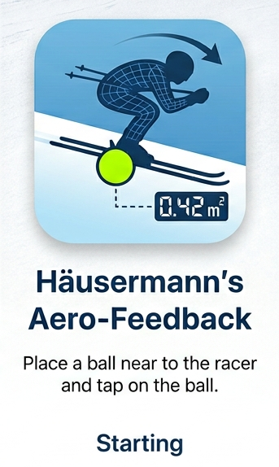

–
m²
Ball antippen zum Kalibrieren
Bestwert: –
Kamera starten, um zu beginnen.

Live-Stirnfläche für die Hocke im Skirennsport.
Frontkamera, damit der Fahrer die Anzeige selbst sieht.
| Grösse | Umfang | Durchmesser |
|---|---|---|
| 1 | 43–46 cm | 13,7–14,6 cm |
| 2 | 54–56 cm | 17,2–17,8 cm |
| 3 | 58–60 cm | 18,5–19,1 cm |
| 4 | 63–66 cm | 20,1–21,0 cm |
| 5 ✓ | 68–70 cm | 21,6–22,3 cm |
Grösse 5 ist der Standard für Erwachsene (Standardwert 0,22 m). Für die App genügt der Mittelwert der jeweiligen Spanne.
Misst die projizierte Stirnfläche A, nicht den Luftwiderstand cw·A. Gedacht für den Vergleich eigener Hocken, nicht zwischen Athleten. Ski-/Fusslage zwischen den Hocken konstant halten.